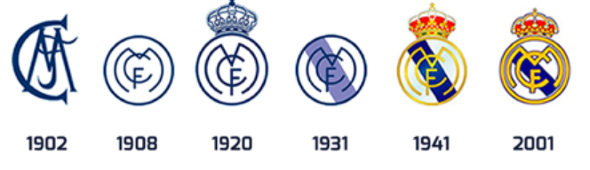
Our Many Eras
1902–1943: Early Years
The club's foundation and early development set the tone for what would become a legendary institution in football.
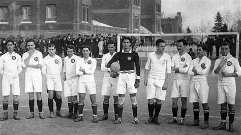
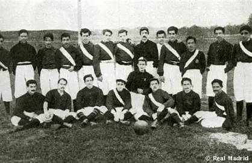
1943–1978: Santiago Bernabéu Era
Under Santiago Bernabéu’s leadership, Real Madrid dominated European football and built its iconic stadium and legacy.
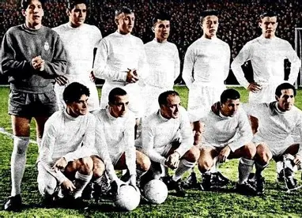
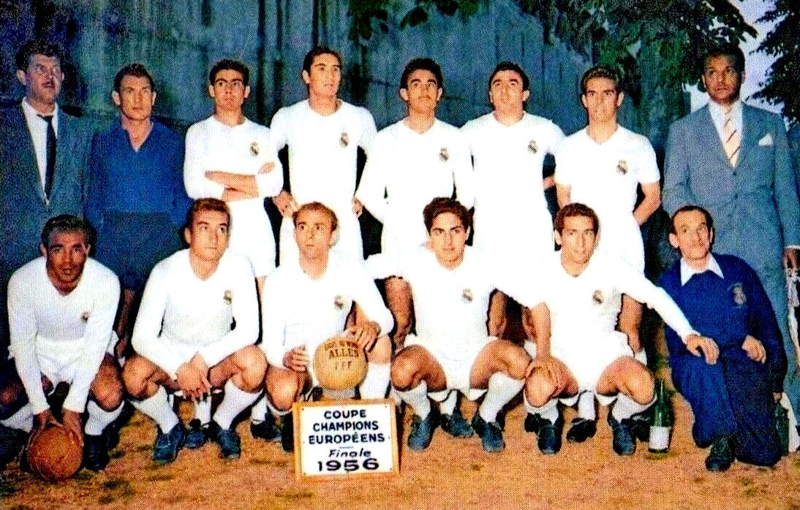
1980–2000: Quinta del Buitre
A team of homegrown stars brought domestic success and defined the club’s character in the 80s and 90s.
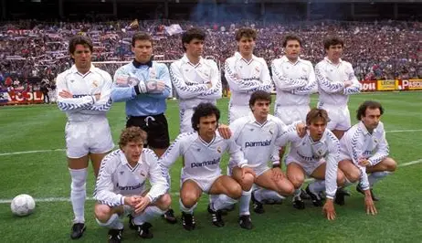
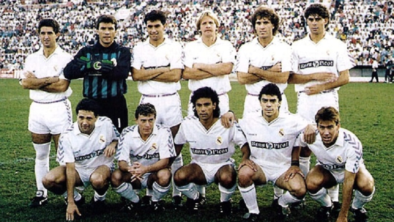
2000–2006: First Pérez Era
With stars like Zidane and Ronaldo, the Galácticos project brought style, attention, and global dominance to the club.
 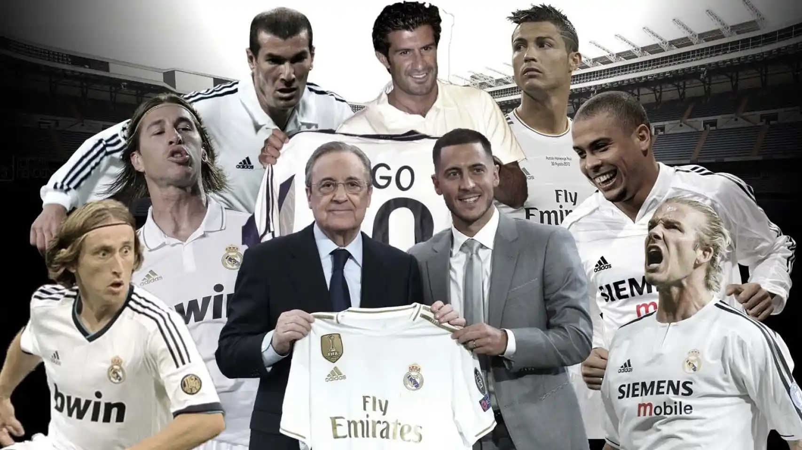
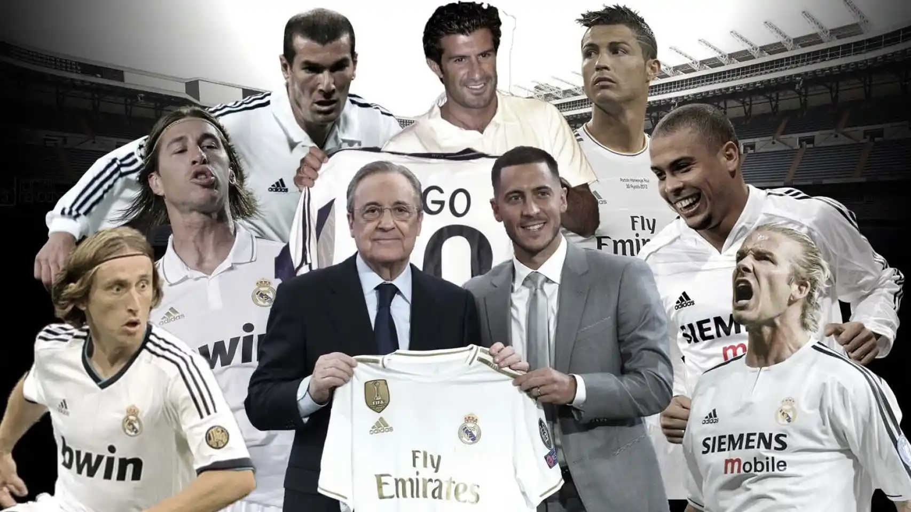
2009–Present: Second Pérez Era
The club won five UEFA Champions League titles in nine years, with Cristiano Ronaldo leading the charge and a new dynasty emerging.
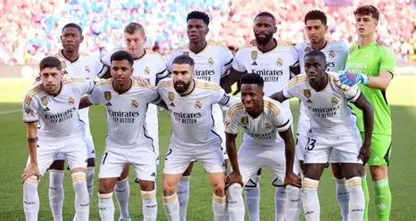
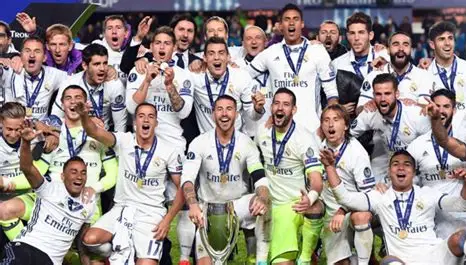